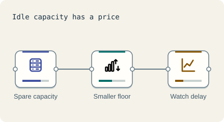

Business · 3 minutes
Where the money goes
Every box has a monthly price. Good design meets the goal without waste.
Open this lesson
Idle is expensive
Paid capacity costs money while quiet. Compare peak provisioning with a quiet-hours schedule, then keep enough headroom for demand.
Try the idea
This system costs far too much for its traffic. Bring the monthly cost under budget without breaking it.
Key numbers
- Small server
- ≈ $150 a month. approx.
- Sending data out to the internet
- ≈ $0.09 per GB. approx.
- Data between regions
- ≈ $0.02 per GB. approx.
Check your reasoning
Think through these questions before opening the lesson. In the game you can test the idea and compare your reasoning.
- What is the cheapest way to cope with a short daily peak?
- Which cost grows with every request?
- The best design is:
The key point
Meet the goal with the least you can; money is a requirement too.
Practise this idea
- Easy
Podcast hosting
You host shows for creators. Listeners press play and download big audio files, and creators upload a new episode now and then. The audio is the bill: every episode downloaded costs bandwidth.
- Medium
Video streaming
You run a movie and series service for a growing audience. Each viewer pulls a few seconds of video at a time for two hours straight. Bandwidth is the largest cost by far, and everyone wants to start watching in the evening.
- Hard
Ad serving
Each page view asks you to pick the best ad in about a quarter of a second: check who is allowed to see what, score the candidates with a model, run a quick auction and answer. Every impression and click must be counted exactly because money depends on it.
- Hard
AI chatbot serving
Millions of people ask your assistant questions. Each reply takes a GPU several seconds, and GPUs are expensive and sometimes simply unavailable. Keep replies flowing, protect your wallet from abuse, and have a plan for when the GPUs run out.